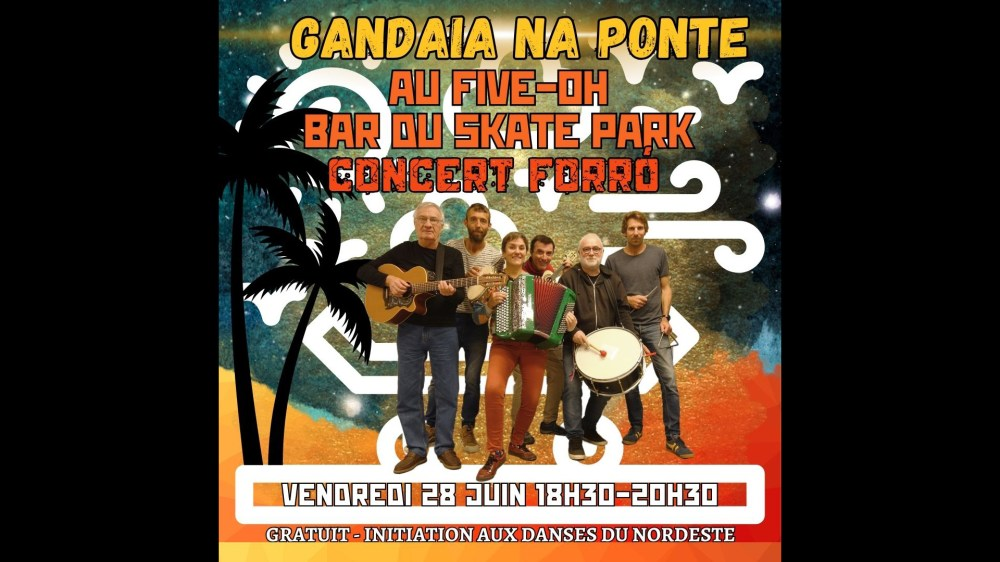

Gandaia na Ponte au Skate Park

Bal forró avec Gandaia Na Ponte au Five-Oh, la guinguette du Skate Park, le vendredi 28 juin 2024 de 18h30 à 21h.
Initiation à la danse si besoin 🙂
Vidéos
Les vidéos sont hébergées par YouTube. Elles ne se chargent, et YouTube n'est contacté, qu'au moment où vous cliquez sur lecture.